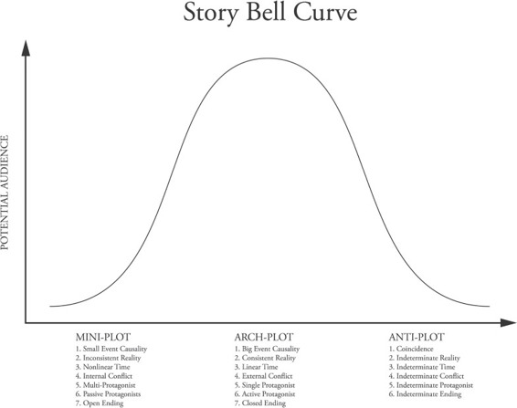

If you were to somehow plot all of the Stories that have ever been told, what would it look like?
It would look a lot like other natural phenomena such as the distribution of height of human beings, or blood type or women’s shoe sizes. Which makes sense because Stories are as natural to human beings as air and water. The graph would look like a bell curve, in statistics what’s called a normal distribution (or Gaussian distribution).
In order to map “Story” though, the first thing you’d need to do is figure out how to judge the stories, right? How about we evaluate the global popularity/commercial appeal of a particular Story along the vertical axis, or the y-axis, versus the three different Story Genre structures from the fourth leaf of our Five-Leaf Genre Clover on the x-axis?
So the further up the y-axis you move, the more appealing the Story will be to larger and larger audiences. That is, the y-axis is a reflection of the relative popularity of every kind of Story ever written…one where each Story perfectly aligns with its content Genre’s conventions. Needless to say, no Story ever aligns perfectly with a single Genre, and like Heisenberg’s uncertainty principle, the closer you analyze and pick at a particular Story to classify it, the more it moves away from your microscope. Also remember that those structures and their corresponding content Genres with the greatest potential for a large audience are also those that are the most difficult to innovate.
On our graph, let’s make the East/West x-axis, the horizontal one, represent the three main structures—Arch-plot, Mini-plot (often referred to as Minimalism) and Anti-plot. (More on these three structures in the next three chapters.) Let’s put the oldest structure, the Arch-plot, in the middle, the Mini-plot on the left hand corner and the Anti-plot on the right hand corner. So the East/West x-axis progression moves from the purest qualities of a Global Mini-plot to the purest qualities of a Global Arch-plot to the purest qualities of a Global Anti-plot. The further you move from left to right on the x-axis, the closer you move toward the qualities of the next Global Story Structure and the further away you move from the qualities of the previous structure.
Here’s what it would look like:

I recommend that you consider where your Story sits on this Story bell curve before you write it and after you have your first draft. Is it a pure Arch-plot? A pure Mini-plot? Can you shift the focus of your Story to find a sweet spot between your literary ambitions and a critical mass of audience who’d be interested?
It’s important because the coordinates of your Story will be immeasurably helpful for you to home in or choose your global content Genre and any supporting content Subgenres. Knowing the relationship between the CONTENT Genres and the STRUCTURE Genres will save you from much pain later on. More on these relationships in the next chapters, but generally the External Content Genres (action, horror, crime, thriller, love, performance, society, war and western) live inside the meaty middle of the Story bell curve, while the Internal Content Genres (worldview, morality and status) tend to move toward the outlying/thinner sections of the curve.
No matter how incredible an Anti-plot war Story may be, the potential audience for it is very small. Which is fine as long as you know what you’re getting into before you sit down to write it. Charlie Kaufman doesn’t write screenplays that he expects will do over a hundred million dollars in the box office their first weekend. So when they don’t, he’s not disappointed. If you’re going after the idiosyncratic and you find that many readers of your work just don’t “get it,” don’t fret. But don’t expect to reach number one on The New York Times bestseller list either.
In addition to avoiding unnecessary work, understanding to whom your work will eventually be marketed and why will prepare you for the business of selling your Story to either a publisher or a select group of readers. But most importantly a comprehensive understanding of the Story bell curve will help you match what you want to say with the best way to say it.
For example, at the onset you may think the horror Genre best serves your controlling idea (we’ll review controlling ideas later on) about the insidious nature of mass media. But after refreshing your knowledge of horror, you may find that it really would be much better served if you approached your work as a love Story/ political social drama instead. Perhaps Paddy Chayefsky had that debate before he began writing Network. Knowing the breadth of Story possibilities and the limitations of each Genre will focus your energy and pinpoint exactly where your Story will best live.
Let’s now review the qualities of these three Story structures. I’m going to begin in the middle, the big meat of Story and then progress to the left tail and then the right tail.